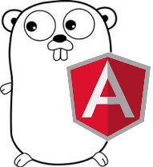

¿Cual es el estado actual de las aplicaciones web?
-
HTML
- Excelente para documentos estáticos.
- Soportado por la mayoria de los dispositivos.
-
Lenguajes y Frameworks
- Buenos para la creación de aplicaciones dinámicas.
- Excelentes para manejar y procesar información.
- Manejo del Back-end y Front-end.
-
JQuery
- Excelente para transferir información entre el DOM y el servidor.
¿Que puede suceder cuando comenzamos a mezclar todas estas?
-Exceso de código.
-Sobretiempo en desarrollo.
-Bajo Performance.
-Poca Escalabilidad.
-Mayor Dependencia.
¿Que es Angular Js?
Angular Js es un framework desarrollado por Google, explícitamente para el procesamiento , manejo y transferencias de datos, en el DOM.
Características que destacan en Angular Js:
- Permite ampliar el vocabulario HTML para la aplicación.
- Destaca en ser:
- Expresivo.
- Fácil del leer.
- Rápido para desarrollar.
¿Que lo diferencian de otros frameworks actuales?
Actualmente Angular Js es una alternativa, en cuanto a los frameworks para el Front-end.
Sin embargo, en estos momentos es respaldado por una de las empresas mas grandes en aplicaciones web y tecnología, Google.
Aunque si duda, Angular Js destaca entre otros frameworks, que actualmente se dedican a abstraer el HTML,CSS y JS o simplemente manipulan el DOM, mientras que Google ataca el problema de raíz.
HTML no se ha diseñado para vistas dinámicas.
¿Que nos propone Angular Js?
Angular Js propone un manejo del framework adecuado para la mayoría de los programadores, bastante familiar a la estructura de la mayoría de framworks y lenguajes de programación cliente-servidor.
Su estructura contiene:
- Inyección de dependencias.
- Módulos.
- Fabricas.
- Servicios.
- Controladores.
- Directivas.
- Filtros.
- Modelos de enrutamiento.
- Vistas.
Por eso es conocido por tener una estructura MVVM (Modelo -> Vista -> Lo que sea).
Ejemplo: {{name}}
<!doctype html>
<html ng-app>
<head>
<script src="https://ajax.googleapis.com/ajax/libs/angularjs/1.2.10/angular.min.js"></script>
</head>
<body>
<div>
<label>Name: </label>
<input type="text" ng-model="yourName" placeholder="Enter a name here">
<hr>
<h1>Ejemplo: {{ yourName }} </h1>
</div>
</body>
</html>
Algunos de los elementos más utilizados
// Declaración de un Modulo
var myAppModule = angular.module('myApp', []);
// Declaración de un Controlador
myAppModule.controller('GreetingCtrl', function($scope) {
$scope.greeting = 'Hola!';
});
// Declaración de Directivas
myAppModule.directive('ExampleDirective', function () {
return {
restrict: 'AE',
templateUrl:'js/partials/exapmle.html',
link: function (scope, iElement, iAttrs) {
scope.example = "Hola";
}
}
})
Aplicación ejemplo
Como se conforma?
<div class="todo" >
<form>
<h1>Servicios</h1>
<ul>
<li ng-repeat="service in services" ng-click="toggleActive(service)" ng-class="{active:service.active}">
{{service.name}} <span>{{service.price | currency}}</span>
</li>
</ul>
<div class="total">
Total: <span>{{total() | currency}}</span>
</div>
</form>
</div>
// Declaración de un Modulo
var slide = angular.module('slide', []);
// Declaración de Directivas
slide.directive('todoex', [function () {
return {
restrict: 'E',
templateUrl: 'directives/todo.html' ,
controller: function ($scope) {
$scope.services = [.....];
$scope.toggleActive = function(s){
s.active = !s.active;
};
$scope.total = function(){
var total = 0;
angular.forEach($scope.services, function(s){
if (s.active){
total+= s.price;
}
});
return total;
}
};
}]);
Aplicación usando Servicios
<div class="chat">
Nombre: <input type="text" ng-model="username">
<hr>
<div ng-cloak ng-repeat="message in messages">
<div class="talk-bubble" ng-class-odd="'tri-right left-in'" ng-class-even="'tri-right rightside right-in'">
<div class="talktext">
<p>{{message.from}}:{{message.content}}</p>
</div>
</div>
</div><br/>
<form ng-submit="addMessage()" >
<input type="text" ng-model="message" placeholder="Mensaje...">
<button class="btn" type="submit">
<i class="icon-reply"> Enviar</i>
</button>
</form>
</div>
//Inyección de dependencias
var slide = angular.module('slide', ['firebase']);
Manejo de servicios
slide.directive('chat', function ($firebase) {
return {
restrict: 'E',
templateUrl: 'directives/chat.html' ,
controller: function ($scope) {
var ref = new Firebase('https://alejo.firebaseio.com/chat');
$scope.messages = $firebase(ref.limit(6));
$scope.username = 'Invitado ' + Math.floor(Math.random()*101);
$scope.addMessage = function() {
$scope.messages.$add({
from: $scope.username, content: $scope.message
});
$scope.message = "";
}
}
}
});
Que beneficios trae?
- Mayor orden.
- Mejor control del DOM.
- Velocidad.
- Aplicaciones mas genéricas.
- Menos tiempo en desarrollo.
- Menor dependencia de tecnologías.
Diversificación:
Actualmente Angular Js, esta comenzado ha impactar mucho en el desarrollo Front-end , tanto que muchos Forks de javascript he incluso , frameworks han comenzado ha crear versiones para Angular Js , mas conocidas como librerías,
Entre ellos:
-Bootstrap
-Hammer
-Jquery
Muchos Mas
Continuo Desarrollo:
Angular ha demostrado que en poco tiempo ha avanzado demasiado, es tal el avance que posiblemente sea uno de los proyectos de javascript, con mas liberación de versiones al año.
Una de sus mayores inteciones es crear un framework , con la menor cantidad de dependencias posibles, hasta ahora es uno de los cuantos frameworks Front- end que no necesita JQuery.
AngularJS y el futuro del desarrollo web
"En plena “era HTML5″ y Web 2.0 pocos son los que discuten que Javascript y CSS3 son los reyes absolutos en lo que respecta al desarrollo “front-end”. Los sitios web son mucho más dinámicos (algunas web´s ya parecen incluso verdaderas aplicaciones de escritorio) de forma que la experiencia del usuario mejora notablemente."
Angular Js no solo ha mostrado, un nuevo camino en el Front-end, si no que también ha mejorado la experiencia de las aplicaciones web.

Conclusión
"Opinion"
Conlusión
Angular sin duda puede ser una gran herramienta, durante el tiempo que la he utilizado, realmente me he sentido muy a gusto, de verdad que es muy fácil desarrollar aplicaciones de esta manera.
Los invito ha usarla, si tienen dudas o preguntas al respecto con mucho gusto tratare de ayudarles en lo que mas pueda.

Esto ha sido AngularJs For Dummies.
<Gracias!!!!>